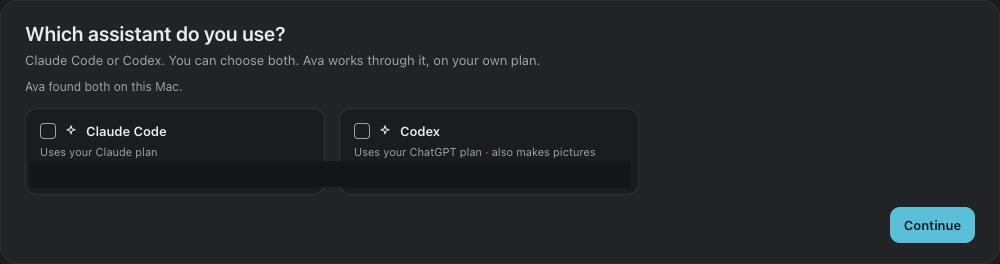
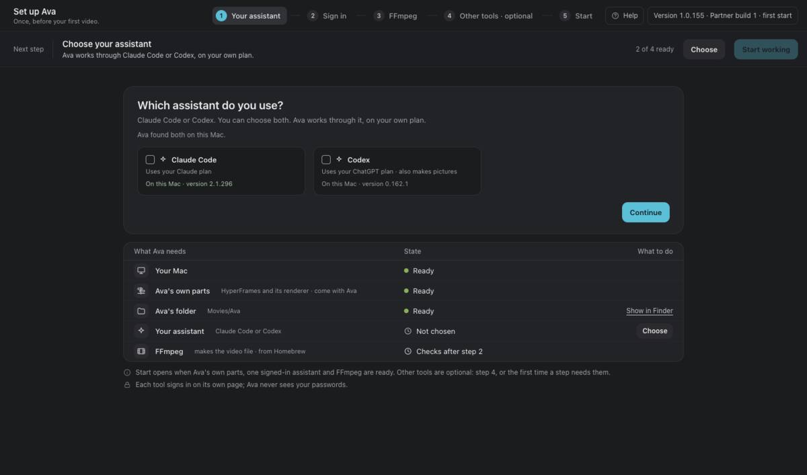
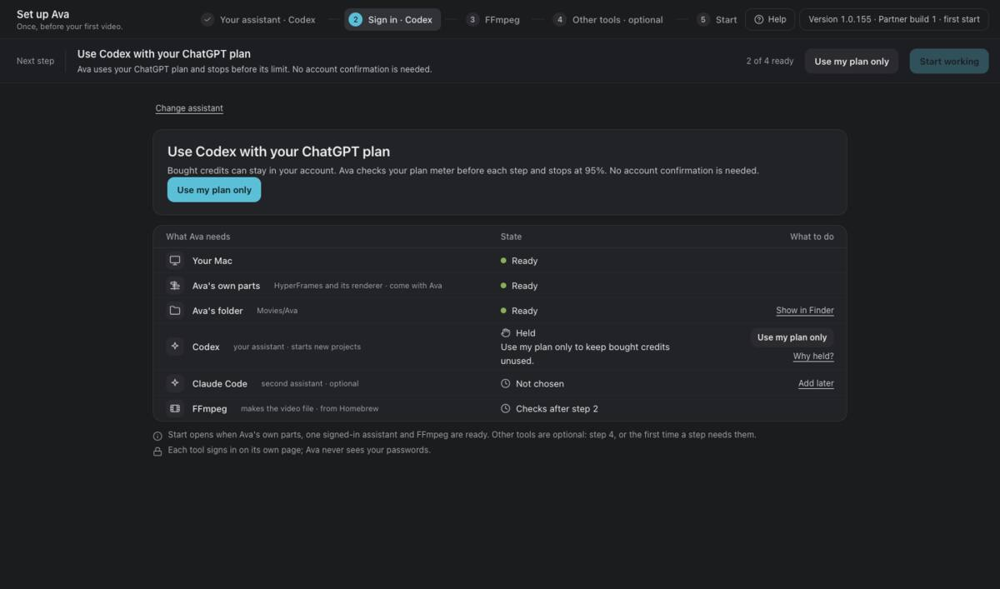
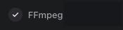
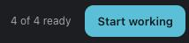
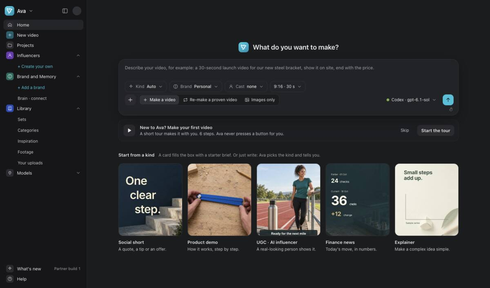

Install and Setup
Install Ava Stage. Choose your assistant. Find Home.
At the end: Ava Stage is ready. You know where to start.
You need macOS 13 or newer. Codex uses your ChatGPT plan. Claude Code needs Claude Pro, Max, Team or Enterprise.
The steps add to 60 minutes. Pause when you need to. Making files can take longer.
Install Ava Stage
15 min- Download
- Applications
- Open Anyway
Open get.avavisionary.com. Use its installation pictures as you follow these steps.
1. Check your Mac. Open Apple menu → About This Mac. “Chip: Apple M…” means Apple silicon. “Processor: Intel” means Intel.
2. Download. Choose the matching Ava Stage download. Open the downloaded disk.
3. Install. Drag Ava Stage to Applications. Open Ava Stage from Applications.
4. If macOS blocks it: stop if it says damaged or harmful. Contact the person who invited you.
Otherwise, choose Done. Keep the app. Open System Settings → Privacy & Security → Open Anyway.
5. Confirm. Use Touch ID or your Mac password. Choose Open again. Do this once for each new version.
After an update, macOS may block the new version. Use these same steps.


Choose your assistant
8 minChoose Codex for your ChatGPT plan, or Claude Code for your Claude plan. Choose Continue.
Pictures and photo sets need ChatGPT through Codex, or Grok. Claude Code alone does not make them.


Sign in with your plan
10 minFollow the chosen tool’s sign-in steps. Return to Ava Stage when you finish.
For Claude Code, macOS may show a Keychain box. Check that the tool and key names include claude. Choose Always Allow.
Only if Codex shows Held: open Why held?. Choose Use my plan only to keep bought credits unused.


Check FFmpeg
10 minFFmpeg makes the video file. Wait for the FFmpeg check to finish.
Check FFmpeg made a test video and Played to the end.
Use Check again if a readiness row asks you to finish a check.


Start working
7 minOther tools are optional. Use Skip for now or Continue to leave them for later.
When Ava Stage shows 4 of 4 ready, choose Start working.


Find your way around Home
10 minThe big box is where you describe what you want to make.
Projects opens saved work. Models shows your tools. Help is at the bottom of the side menu.
You can choose Start the tour. Ava Stage does not press the buttons for you.

